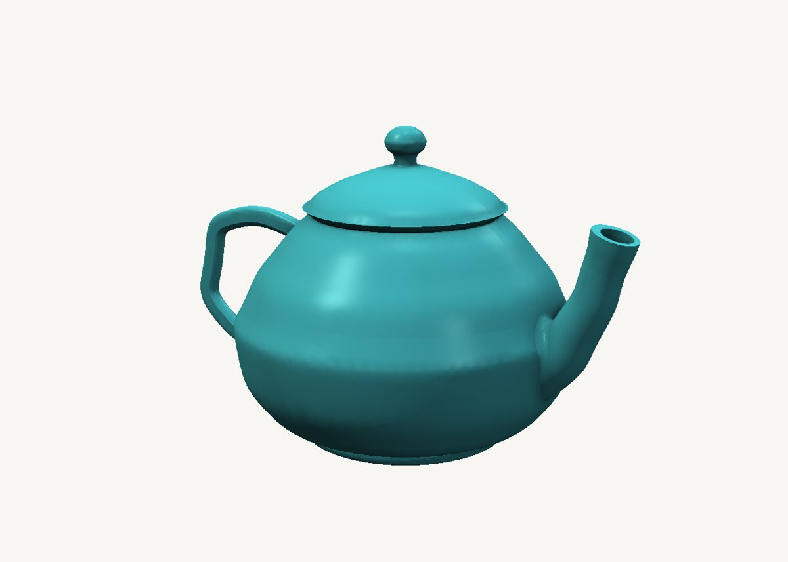
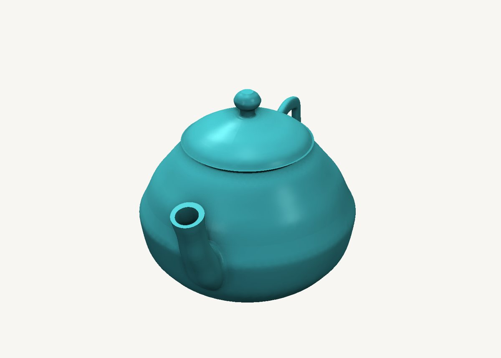
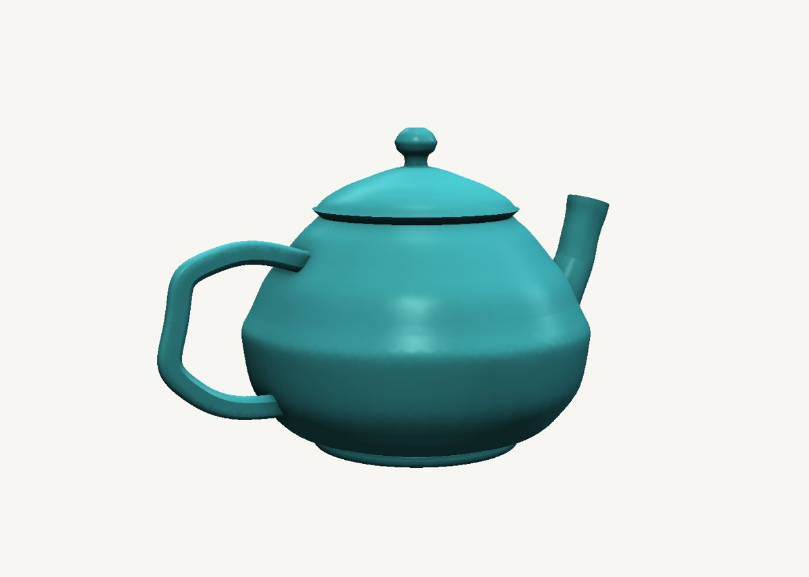

How to model a teapot in SweeperCAD
A whole teapot - body, spout, handle, foot and a lid that lifts off - from nine sweeps. No mesh sculpting, no loft wizard: each part is one profile pushed along one curve.
Download the model Get SweeperCAD (free)
9 objects · 171 × 112 × 102 mm · free to use, no credit needed (CC0)



How it is built
- The body is a turned shellA circle swept straight up. The scale graph is the teapot's silhouette drawn from the side: narrow at the foot, a full belly, a narrower mouth. Drag a point on that graph and the belly swells or slims, live.
- Hollow it with a second sweepThe inside is the same kind of sweep: the same silhouette, the wall thickness smaller, started just above the floor and run a little past the mouth - then subtracted. Exact walls, and it rebuilds in a moment.
- The spout is a circle along an S-curveThe spine is an S drawn beside the body; the scale graph tapers it from a thick root to a slim lip that flares again at the end. Its bore is the same sweep 2 mm thinner, running from inside the body out past the lip, so the hole goes all the way through.
- The handle is a rounded rectangle along a CBoth ends of the C sink into the body, so the combine finds a real seam to round over.
- Foot, lid and knobThe foot is a ring - a small circle swept along a circular spine. The lid is a flange, a dome and a knob, each a short sweep with its outline as the scale graph, kept as its own part so it lifts off.
- Fillets only where they showThe spout and the handle are blended into the body on their own combine nodes. Change the spout's curve later and its fillet is rebuilt with it.
Open it and pull on it
Download the model, open it with SweeperCAD and it lands on your asset shelf. Place it, then select any part: its profile, spine and scale graph are right there to drag, and everything downstream rebuilds - fillets included. Every curve stays editable; nothing is ever baked.
More examples
Nautilus shell Mecha arm Potted plant Robot Elliptic-wing fighter · the whole library